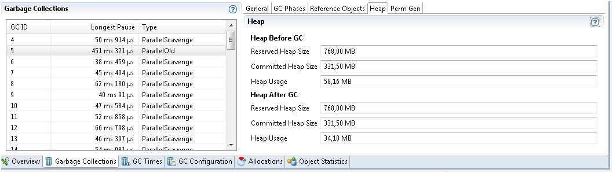
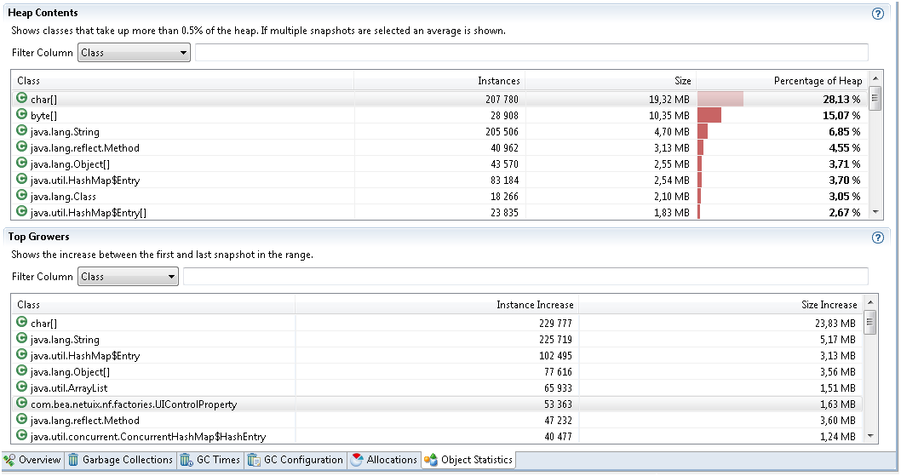
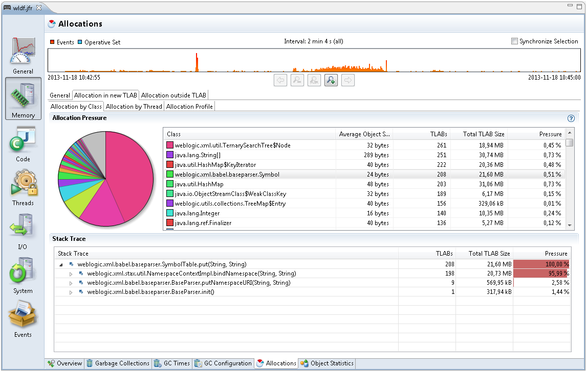

The Java Flight Recorder (JFR) is a commercial feature. You can use it for free on developer desktops or laptops, and for evaluation purposes in test, development, and production environments. However, to enable JFR on a production server, you must have a commercial license. Using the Java Mission Control (JMC) for other purposes on the JDK does not require a commercial license.
For more details about the JFR commercial features and availability, see the product documentation.
For more details about the JFR commercial license, see the license agreement.
The following sections show figures and describe how to debug a memory leak using Java Flight Recorder.
Detecting a slow memory leak can be hard. A typical symptom is that the application becomes slower after running for a long time due to frequent garbage collections. Eventually, OutOfmemoryErrors may be seen. However, memory leaks can be detected early, even before a problem occurs using Java Flight Recordings.
Watch if the live set of your application is increasing over time. The live set is the amount of Java heap that is used after an Old Collection (all objects that are not live have been garbage collected). The live set can be inspected in many ways - run with the -verbosegc option, or connect to the JVM using the JMC JMX Console and look at com.sun.management.GarbageCollectorAggregator MBean. However, another easy approach is to take a flight recording.
Enable Heap Statistics when starting your recording, which triggers an old collection at the start and at the end of the recording. This may cause a slight latency in the application. However, Heap Statistics generates an accurate live set information. If you suspect a rather quick memory leak, take a profiling recording that runs over, for example, an hour. Click Memory tab and select the Garbage Collections tab to inspect the first and the last old collections as shown in Figure 3-1.
Figure 3-1 Debug Memory Leaks - Garbage Collection Tab
Select the first old collection as shown in Figure 3-1 to look at the heap data and heap usage after GC. In this recording, it is 34.10 MB. Now look at the same data from the last old collection in the list and see if the live set has grown. Before taking the recording, you must allow the application to start and reach a stable state.
If the leak is slower, you can take a shorter 5-minute recording. Then take another recording, for example 24 hours later (depending on how fast you suspect the memory leak). Obviously, your live set may go up and down, but if you see a steady increase over time, then you could have a memory leak.
After you have your recording showing the leak, you can look at Object Statistics. Look at one long recording, then look at which classes grew the most in heap usage over the recording. If you took several recordings at intervals, then compare the heap contents section and see what object types have increased the most between the recordings, as shown in Figure 3-2.
Figure 3-2 Debug Memory Leaks - Find Leaking Class
Especially, watch the classes that are not part of the standard library. For example, you will often see Char arrays as one of the top growers. This is due to many Strings being allocated; therefore, watch out for objects that keep these Strings alive. If you have a class that has 10 Strings as members, then the object itself will not use too much heap. The heap will be used by the Strings, which mostly contains pointers to the Char arrays. Therefore, it is good to sort on the number of instances and not the size of the objects. If one of your application class has many instances, then it may very well be those objects that keep other objects alive.
Finding the actual leak can be difficult One thing to do when you have come this far is to dump an HPROF and inspect the Java heap using The jhat Utility to find out how the suspect objects are kept alive. You can also use the JMC plug-in, JOverflow for looking at the reference chains in the HPROF dump.
Some additional information can be found using Flight Recordings.
Look at the Allocations subtab as shown in Figure 3-3, for some samples of where objects were allocated.
Figure 3-3 Debug Memory Leaks - Allocations tab
If you except a specific class leak, look at the Allocation in new TLAB tab. Check the class samples being allocated. If the leak is slow, there may be a few allocations of this object and may be no samples. Also, it may be that only a specific allocation site is leading to a leak. To summarize, this is not guaranteed to lead you to the right allocation stack trace for the leak, but it may give vital clues.